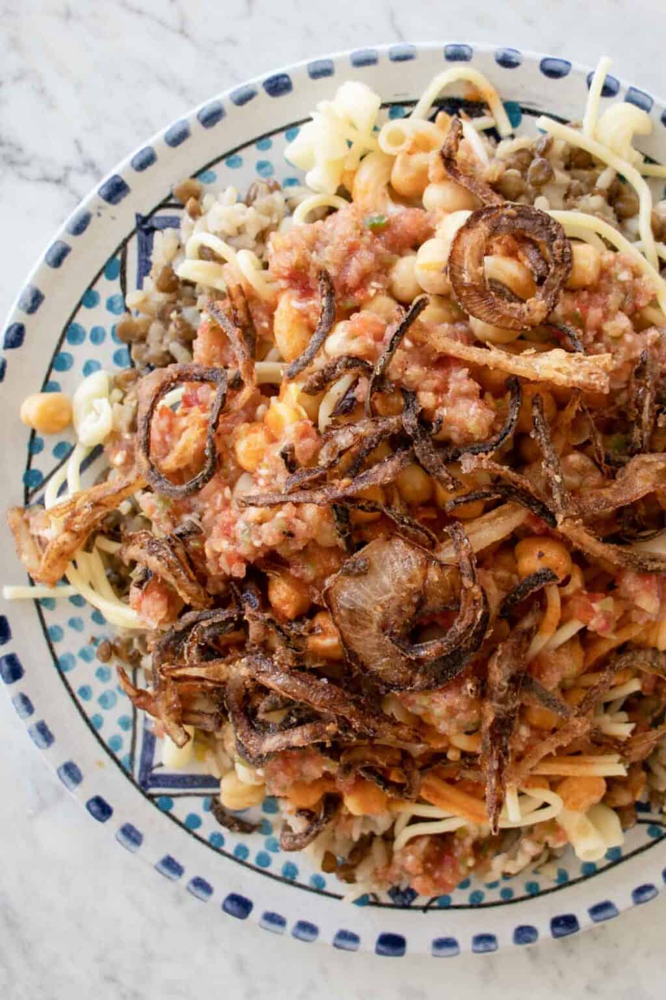

<!DOCTYPE html>
<html lang="en">
    </html>
<head>
    <meta charset="UTF-8">
    <Title>Koshari</title>
    <link rel="stylesheet" href="../style.css">
            
        
    </head>
    </html> 
<html>
<body>
<h1>Koshari</h1>
<p>When I traveld to <strong>Cairo, Egypt</strong>, my favorite dish was Koshari.
    <br>
Koshari is the <strong>National Dish</strong> of Egypt. It is completely <strong>vegan</strong> and delicious.
<br>
</p>

<br>
Koshari consists of <strong>five</strong> parts.
<br>
<ul>
    <li>Pasta</li>
    <li>Lentil Rice</li>
    <li>Vinegar Red Sauce</li>
    <li>Fried Onions</li>
    <li>Chickpeas</li>
    <li>Seasoned Red Sauce <em>Optional</em></li>
</ul>

    <h3>Pasta Ingredients</h3>
    
    <ul>
        <li>Total of 16oz of Pasta
    
        <ul>
         <li>8oz of Elbow Noodles</li>
         <li>8oz of Spaghetti</li>   
        </ul>
    </li>
    <h3>Fried Onion Topping<em> Prep in flour 30 min Prior</em></h3>
        <ul>
        <li>2 Onions <em>cut into strips or rings</em></li>
        <li>6 TB of Flour <em>to toss the onions in prior to frying</em></li>
        <li>Oil for Frying the onions
            <br>
            <em>Sunflower Oil is the best for crispiness and flavor, but any oil will work. 
             <br><strong>Save 4 TB of the oil once the onions are fried for the rice and one TB for optional sauce.</strong> 
            </em>
        </li></ul>
    <h3>Chickpeas</h3> 
        <ul>
        <li>2 Cans of Chickpeas (15oz)<em>Drained and Rinsed</em></li>
        <li>2 tsp of Ground Cumin</li>
        <li>Juice from Half a Lime</li>
    </ul>    
    <h3>Vinegar Red Sauce</h3>
       <ul>
        <li>2 1/4 lbs of Tomatoes
            <br>
            <em>Can substitue 24 hours of tomato sauce if desired</em>
        </li>
        <li>2 TB of Ghee</li>
        <li>1 tsp of Chili Flakes or Cayenne Pepper</li>
        <li>9 Cloves of Garlic</li>
        <li>3 TB of Tomato Paste</li>
        <li>3 TB of White Vinegar</li>
        <li>1 tsp of Ground Cummin</li>
        <li>1 tsp of Ground Coriander</li>
        <li>1/2 tsp of Sugar</li>
        <li>1 tsp of Black Pepper</li>
    </ul>
    
    <h3>Lentil Rice Ingredients</h3>
    <ul>
        <li>1 Cup Brown Lentils
       <br> 
       <em>Soak Lentils for 3 hours prior to making Koshari</em>
    </li>
    <li>2 Cups Short Grain Rice
        <br>
        <em>Calrose, Egyptian, or Japanese Short Grain Rice</em>
    </li>
    <li>1.5 Onions <em>Diced</em></li>
    <li>4 TB of the Fried Onion Oil</li>
    <li>4 Cups of Water</li>
</ul>   
    <h3>Fresh Red Sauce <em>Optional</em></h3>
    <ul>
    <li>1 lb of Tomatoes</li>
    <li>1/2 Bell Pepper<em>Diced</em></li>
    <li>1/2 Onion<em>Diced</em></li>
    <li>3 Garlic Cloves</li>
    <li>1 tsp Ground Coriander</li>
    <li>1 tsp Ground Cumin</li>
    <li>1 TB Fried Onion Oil</li>
    <li>Juice of 1 Lime</li>
    <li>Peper and Salt <em>To Taste</em></li>
    <li>1 Spicy Pepper <em>Optional</em></li>
    </ul>
    <h3>Directions</h3>
    <ol>
    <li><h4>Prepare Chickpeas</h4>
        <p>Once your Chickpeas are drained and rinse, boil for 5 minutes in water with the cumin. Then add lime juice.</p>
    </li>
    <li><h4>Fry the Onions</h4>
        <ol>
        <li>Pre-heat oil</li>
        <li>Carefully drop the floured onion pieces into oil</li>
        <li>Fry until brown</li>
        <li>Remove and place on paper towel and set aside</li>
        </ol>
    <li><h4>Red Sauce<em>Optional</em></h4>
        <ol><li>In a food processor blend tomatoes, bell pepper, onion, and garlic until mostly smooth</li>
        <li>Add the remainder of Ingredients</li>
        <li>Blend until smooth. Set aside.</li></ol>
    </li>
    <h4>Koshari Lentil Rice</h4>
    <ol>
        <li>Blend onions in a food processor</li>
        <li>In large stock-pot over medium head: add the 4 TB of fried onion oil.</li>
        <li>Add the blended onions to pot and simmer for 10 minutes.</li>
        <li>Add drained lentils and water to pot. Bring to boil. Simmer 10 minutes, covered</li>
        <li>Over medium low heat add the rice, salt, and peper.</li>
        <li>Mix all together and cover. Cook until the rice is tender <em>about 12 minutes</em></li>
    </ol>
    <h4>Pasta</h4><
    <ol><li>Boil the water</li>
    <li>Break spaghetti in half</li>
    <li>Once the water is boiled add pastas</li>
    <li>Cook until pasta is tender <em><strong>NOT MUSHY</strong></em></li>
    <li>Drain pasta and set aside</li></ol>
    <h4>Vinegar Red Sauce</h4>
    <ol><li>If using fresh tomatoes blend in processor and strain tomatoes into a bowl</li>
        <li>In a large pot add oil and chili flakes <em>if using</em> and garlic, cook on high for 30 seconds</li>
        <li>Add in tomato paste and vinegar. Cook 30 seconds</li>
        <li>Add in tomatoes, cumin, coriander, salt, sugar, and black pepper.</li>
        <li>Simmer for 10 minutes, then set aside</li>
    </ol>
    <h4>Assemble the Delicious Koshari</h4>
        <h5>Layer your bowl in the order listed</h5>
        <ol>
        <li>Lentil Rice</li>
        <li>Pasta</li>
        <li>Chickpeas</li>
        <li>Vinegar Red Sauce</li>
        <li><em>Optional Red Sauce</em></li>
        <li>Fried Onions</li>
    </ol>
    
</ol>

<br>
<a href="Thanksgiving_Stuffing.html">Thanksgiving Stuffing</a>
<br>
<a href="/index.html">Home</a>


</body>  
</html>
